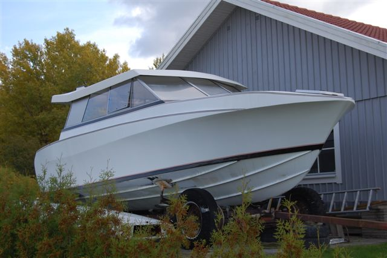
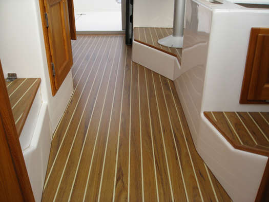
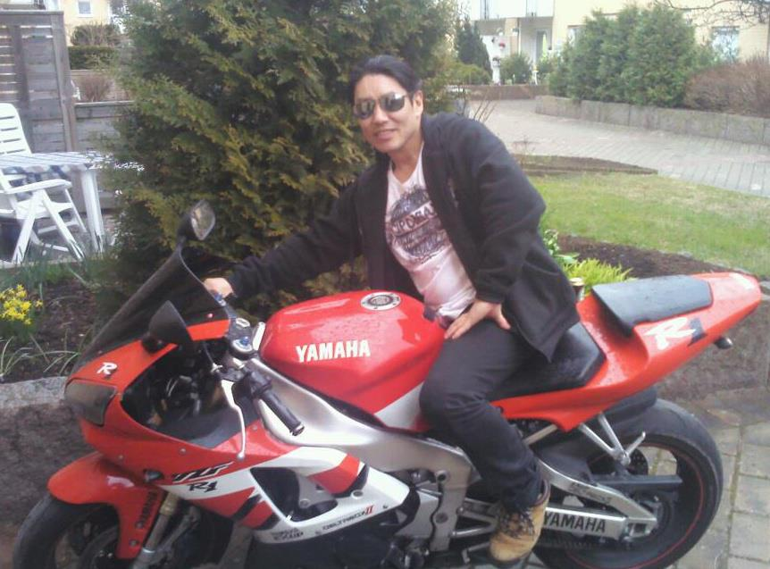
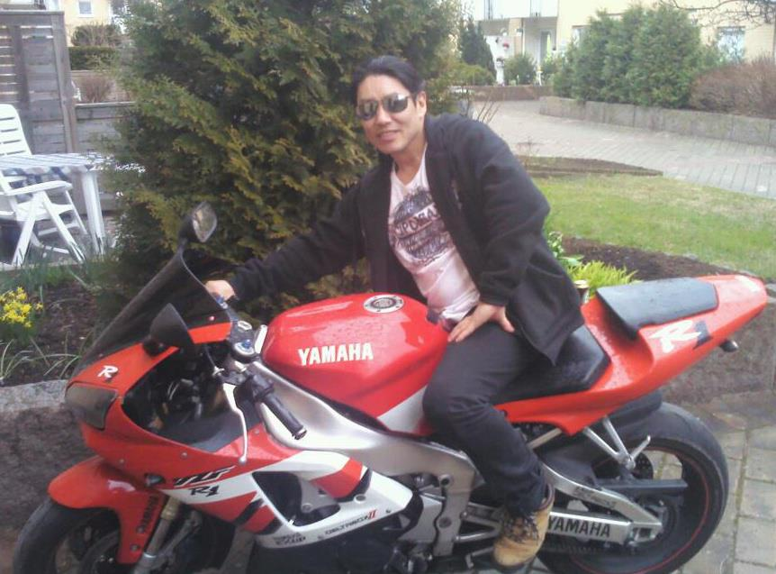

Snabba bilar, motorcyklar och båtar
När det gäller leksaker som gillar jag så är jag nog som de flesta killar och tycker om, häftiga bilar, snabba motorcyklar, och feta båtar.
Här tänkte jag visa några av mina senaste tre ”projekt”. Givetvis är de inte verkligheten lika glamorös och flashiga som drömmarna och det handlar om många timmar, nerskitad med oljiga händer som aldrig blir riktigt rena. Krångliga arbetsställningar och långa resultatlösa arbetsmoment där man inte vet hur man ska göra utan man testar sig fram till lösningar som egentligen inte är bra.
 Men eftersom det här arbetet egentligen inte handlar om att redovisa min hobby, utan mer om att göra hemsidor så kommer jag endast att visa några bilder av projekten. Den första bilden är på min båt som jag tänkte göra iordning. Jag köpte ”henne” på ”Blocket” och min tanke var att fixa iordning henne. Men som så många andra projekt så kommer man snart på att man inte har den tid som egentligen krävs och jag beslutade mig för att sälja henne vidare till någon som hade tiden över att färdigställa henne.
 

Jahopp det var allt jag hade att skriva om för den här gången. Tyvärr handlade det ju inte så mycket om vad min hobby är egentligen utan mer om leksaker som är roliga att leka med (Motorcykeln är inte min utan en kompis). Antar att jag får göra ytterligare en webbsida som handlar om det det ska handla om. Nu orkar jag inte skriva mer hej hopp, hej då!
Med vänliga hälsningar Micke